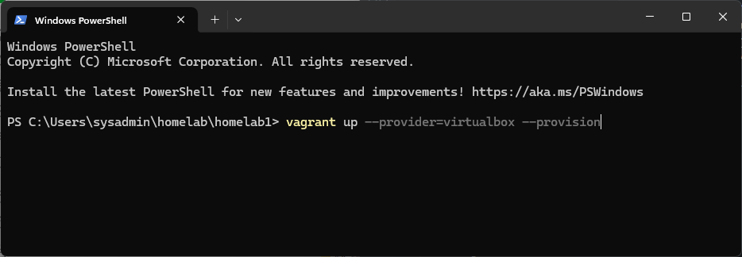
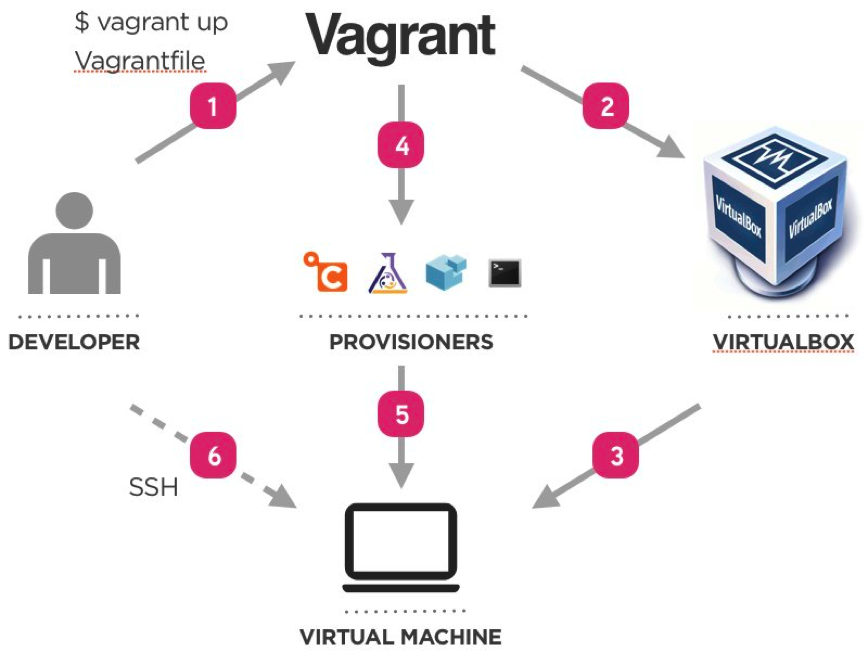

สร้าง IoT Home lab
การสร้าง IoT home lab เพื่อใช้สำหรับการเรียนรู้และการพัฒนา มีวัดถุประสงค์เพื่อให้การเรียนรู้มีประสิทธิภาพ รวดเร็วไม่เสียเวลาสำหรับการสร้าง Environment โดยการสร้าง Home Lab ในบทนี้จะเป็นการสร้างบน Windows 10/11 มีขั้นตอนดังต่อไปนี้
- ติดตั้ง Virtaulbox version ล่าสุด
- ติดตั้ง Vagrant
- ปิด Service HyperV บน Windows
- สร้าง Vagrantfile เพื่อสร้าง lab
1. ติดตั้ง Virtualbox
ไปยัง https://www.virtualbox.org/wiki/Downloads เพื่อทำการ Download โปรแกรม virtualbox และ Extension Pack

2. ติดตั้ง Vagrant
Vagrant คืออะไร

ไปยัง https://www.vagrantup.com/ ให้ Download Community Version

ตั้งค่า Path
เมื่อตั้งตั้งโปรแกรมในข้อ 1,2 เรียบร้อยแล้วให้ทำการเพิ่ม path ของ โปรแกรมเพื่อให้สามารถใช้งานผ่านทาง Command Line ได้
- เพิ่ม Path ของ virtualbox ไปยัง Environment Variable (C:\Program Files\Oracle\VirtualBox)
- เพิ่ม Path ของ vagrant ไปยัง Environment Variable (C:\Program Files\Vagrant\bin)
 กดเลือกบรรทัด path และกดปุ่ม New เพื่อเพิ่มเติมค่า
กดเลือกบรรทัด path และกดปุ่ม New เพื่อเพิ่มเติมค่า

ปิด hyperv service บน Windows
เปิด Powershell ในโหมด Administrator
> Disable-WindowsOptionalFeature -Online -FeatureName Microsoft-Hyper-V-All
 และ
และ
> bcdedit /set hypervisorlaunchtype off

ติดตั้ง Home lab
เรียนรู้พื้นฐานการสร้าง Home Lab ด้วยสร้าง Virtual Host บน virtualbox ด้วยการใช้งานคำสั่ง vagrant
- สร้าง Folder สำหรับติดตั้ง Homelab เช่น thingsboard
- ภายใน folder thingsboard ประกอบด้วย File 2 File ดังนี้
- Vagrantfile ระบุคำสั่งสำหรับการสร้าง VM (เรียกว่า Creation)
- bootstrap.sh ระบุคำสั่งที่ทำงานภายใน VM (เรียกการ Provision)
ตัวอย่าง สร้าง Debian server
สร้าง VM ด้วย Debian 12 และหลังจากสร้าง VM ก็จะทำการติดตั้ง docker engine
- สร้าง Folder homelab ด้วย คำสั่ง mkdir
>mkdir homelab
- หลังจากนั้น ให้ Download ไฟล์ homelab1.zip ไปไว้ folder homelab และทำการแตก zip ให้เรียบร้อย
- และใช้ Terminal เปิดไปยัง folder homelab1

- run คำสั่ง vagrant ดังนี้
vagrant up --provision=virtualbox --provision
ตัวอย่างหน้าจอ 
ขั้นตอนการทำงานเบื้องหลัง

File Vagrantfile เป็นภาษา ruby ทำหน้าที่เป็น Template เพื่อส่งต่อให้แก่ คำสั่ง Vagrant นำไปสร้าง VM บน Virtualbox
Vagrant.configure("2") do |config|
config.vm.box = "generic/debian12"
config.vm.network "private_network", ip: "192.168.56.10"
config.vm.network "forwarded_port", guest:2375 , host: 2375
config.vm.network "public_network", bridge: "Intel(R) Wireless-AC 9560 160MHz", ip: "192.168.1.10"
config.vm.synced_folder ".", "/vagrant", type: "rsync"
config.vm.provider "virtualbox" do |vb|
vb.customize [
"modifyvm", :id,
"--nested-hw-virt", "on",
"--memory", "2048",
"--paravirtprovider", "hyperv",
"--cpus", "2"
]
end
#config.vm.provision "shell" , path: "bootstrap.sh"
end
File bootstrap.sh เป็น Bash script ไว้สำหรับ Run ใน Debian สำหรับการติดตั้ง Docker , Docker compose
#!/bin/bash
echo "[ ] Start vagrant provisioning"
# Add Docker's official GPG key:
sudo apt update && sudo apt upgrade -y && sudo apt autoremove –y
sudo apt --fix-broken install -y
sudo apt-get install ca-certificates curl -y
sudo apt-get install openssh-server -y
sudo apt-get install wget tree -y
sudo apt install \
apparmor \
cifs-utils \
curl \
dbus \
jq \
libglib2.0-bin \
lsb-release \
network-manager \
nfs-common \
udisks2 \
wget -y
sudo curl -fsSL https://download.docker.com/linux/debian/gpg -o /etc/apt/keyrings/docker.asc
sudo chmod a+r /etc/apt/keyrings/docker.asc
# Add the repository to Apt sources:
echo "[ ] install docker "
echo \
"deb [arch=$(dpkg --print-architecture) signed-by=/etc/apt/keyrings/docker.asc] https://download.docker.com/linux/debian \
$(. /etc/os-release && echo "$VERSION_CODENAME") stable" | \
sudo tee /etc/apt/sources.list.d/docker.list > /dev/null
sudo apt update -y
sudo apt-get install docker-ce docker-ce-cli containerd.io docker-buildx-plugin docker-compose-plugin -y
sudo usermod -aG docker vagrant
newgrp docker